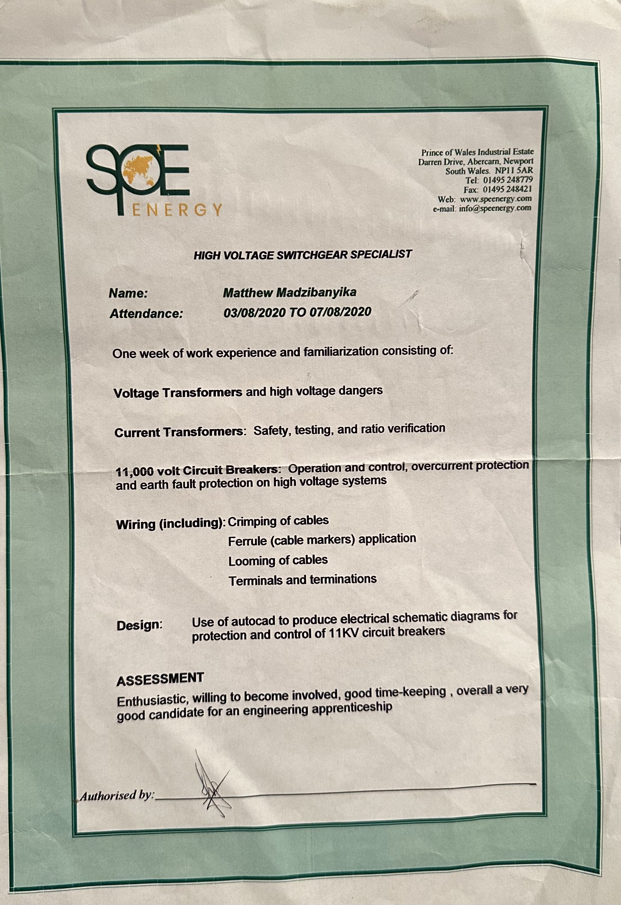
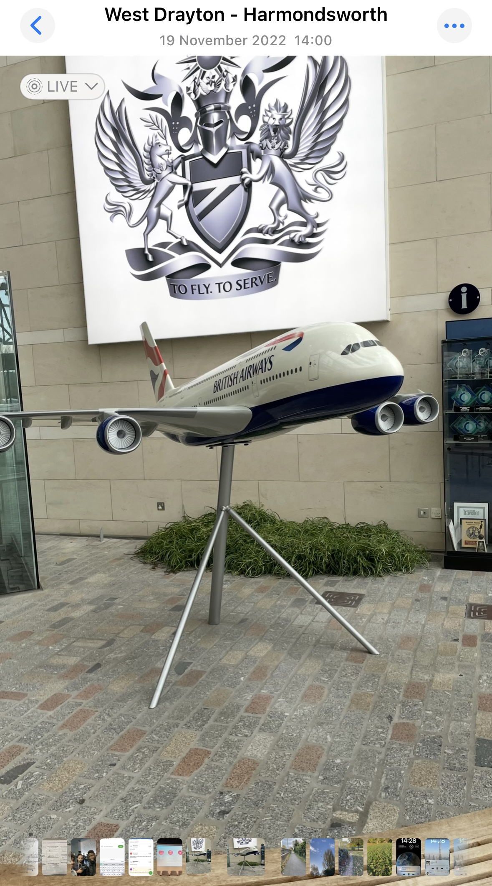
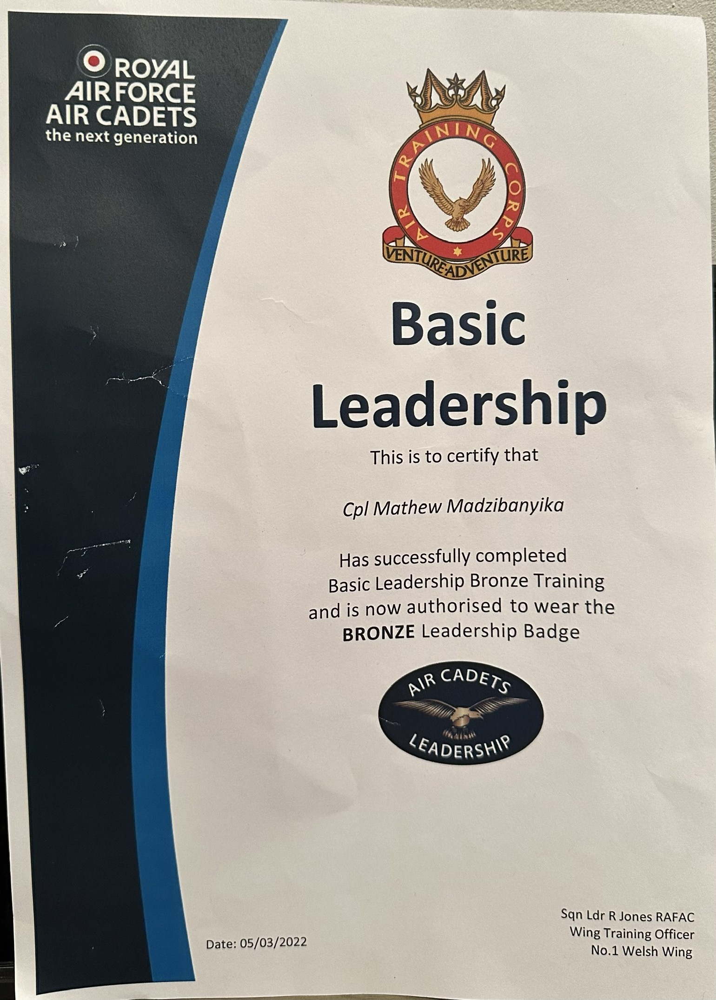

Knowledge and Skills Development
CPD activity: Python electoral project
Type: Technical skills
Date: 6/12/2024
Hours claimed: 8 hours
Benefits: This project helped me increase my Python programming skills from very low to intermediate. The project bridged Python and real data, which is something that’s commonly done when building AI. The aim of the project was to make the system have useful functions to break down the data, such as calculating the total voters and the percentage of votes.
Reflection:
• Python skills strengthened
• Project time management improved
• Learning the basics of GitHub and why it’s so useful
• Presenting data effectively
Career link: Automotive AI systems rely on vast amounts of data. This project is the beginning/ foundation on how to handle data.
Proof: https://olympus.ntu.ac.uk/N1192518/VotingAnalysisProject
CPD activity: Electrical engineering apprenticeship at SPE wales
Type: Practicle skills
Date: 3/08/2020 to 7/08/2020
Hours claimed: 8 hours
Benefits: This work experience helped me develop many personal and practical skills. This was my first time in a work environment, and I learnt the importance of communication within a team and asking for clarification if things do not make sense. I also learnt how large cables are crimped and how to use Autocad, hence my mentor stressed to me the importance of being accurate when using software or being hands-on, because in the world of engineering, there are very small margins of error.
Reflection:
• Useing autocad to design generators
• Learning building curcits and cabling
• Learning about circuit breakers
• Importance of trime management and teamwork in a business environment
Career link: Software engineers and electrical engineers may work closely together, knowing abit of the other side helps.
Proof:
CPD activity: British Airways work experience
Type: Knowledge insights on the industry
Date: 19/11/2022
Hours claimed: 3 hours
Benefits: This apprenticeship gave me key insights into the different types of engineering and gave me an idea of what path I want to go down. I gained knowledge on how engineering keeps British Airways running. At British Airways, aerospace engineering branches into specialised paths such as avionics engineering, which I was quite interested in. Avionics engineering is the design of software for the plane, such as things like autopilot and navigation systems. I want to be a software engineer, this interests me a lot.
Reflection:
• Learning about different parts of a commercial planes
• Opportunity to travel to many countries when working with British Airways
• How software is so important in aeroplanes and why no mistakes can be made
• Importance of teamwork because manufacturing a plane hosts many team members
Career Understanding how software engineering works in the aerospace world.
Proof:
CPD activity: Cadets’team leadership
Type: Leadership development
Date: 5/03/2022
Hours claimed: 4 hours
Benefits: Completing my Bronze leadership qualification required me to develop very key skills such as communication, team coordination as a leader and good problem-solving skills, whilst also taking on other people’s ideas within a group, even though you are a leader. I had an activity where I had to come up with a new sporting game and lead my group in this field activity, I also had to lead a drill for the first time and fall out the squadron. I was under pressure and had to adapt plans and resolve problems when they arose. I feel like the skills I learnt at Cadets were beneficial for software engineering because I may find myself one day being a leader of a group at work or even within a course project where I have to listen to everyone’s input and not only mine.
Reflection:
• Team coordination management
• Group listener
• Adaptability development
Career Leading a software engineering group even within a course requires the fundamentals stated.
Proof:
